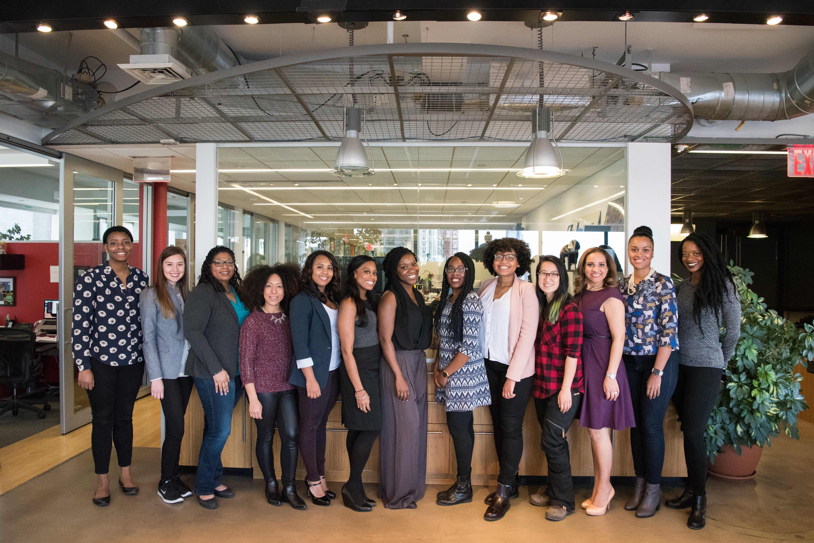

Vi på Mugghörnan är passionerade om att skapa unika och minnesvärda muggar som berikar ditt liv. Vår kollektion av handgjorda muggar är skapade med omsorg och kreativitet för att passa varje individuell smak och stil. Läs mer om oss nedan:
Om Oss: Lär känna vårt team och vår vision bakom Mugghörnan. Vi är dedikerade till att leverera högkvalitativa muggar som skapar glädje i vardagen.
Vår Kvalitet: Vi strävar efter perfektion i varje detalj och använder enbart de bästa materialen för att säkerställa att varje mugg blir en älskad följeslagare i många år framöver.
Vår Passion: Muggar är inte bara behållare för drycker, de är en del av ditt dagliga ritual och personlighet. Vår passion för muggar syns i varje unik design.
Ta del av vår värld och utforska vårt sortiment för att hitta den perfekta muggen som passar just dig.
Mugghörnans vision
Vi på Mugghörnan tror på kraften i de små stunderna. En perfekt kopp kaffe på morgonen som väcker dina sinnen. En avkopplande stund med en god bok och en varm kopp te. En delad skrattstund med vänner över en rykande kopp choklad.
Vår vision är att skapa muggar som blir en del av dessa minnesvärda ögonblick. Varje mugg vi skapar är en chans att föra en extra skvätt glädje och skönhet in i ditt liv. Vi strävar efter att göra varje mugg till en konstnärlig upplevelse, oavsett om det är genom våra handmålade mönster eller våra unika designer.
Vi tror också på kvalitet och hållbarhet. Varje mugg är skapad med omsorg och tillverkad av de bästa materialen för att säkerställa att den håller länge och ger dig många härliga stunder.
Vi är stolta över att vara en del av dina ögonblick och ser fram emot att skapa magi tillsammans med dig genom våra muggar från Mugghörnan.
Vår passion för kvalitet
Vi på Mugghörnan brinner för att leverera muggar av högsta kvalitet till varje kund. För oss är kvalitet inte bara en standard, det är en passion. Varje mugg genomgår noggranna tester och inspektioner för att säkerställa att den uppfyller våra stränga krav.
Vi väljer noggrant ut de finaste materialen och arbetar med skickliga hantverkare för att skapa muggar som inte bara är vackra att se på, utan även en glädje att använda. Vi strävar efter att överträffa förväntningarna och skapa muggar som blir en del av ditt liv, varje dag.
När du väljer en mugg från Mugghörnan kan du vara säker på att du investerar i något som är mer än bara en behållare för drycker. Du investerar i vår passion och engagemang för att leverera det allra bästa till dig, vår uppskattade kund.
Vår historia: Från kaffedrickare till kaffekoppsexperter
Allt började med en gemensam kärlek för en perfekt kopp kaffe. För oss var det inte bara en dryck, det var en ritual, en stund av frid och njutning. Vi insåg att själva koppen spelade en avgörande roll i denna upplevelse, och vår resa som kaffekoppsexperter tog sin början.
Vi strävade efter att skapa muggar som inte bara höjde smaken av kaffet, utan även berikade hela upplevelsen. Vi experimenterade med material, form och design för att hitta den perfekta balansen mellan funktionalitet och skönhet.
Med åren blev vår passion till yrke och vårt kunnande förfinades. Vi började förstå varje aspekt av en mugg - från materialval till ergonomi och estetik. Varje mugg som bär vårt namn är resultatet av denna långa och kärleksfulla resa.
Idag är vi stolta över att vara kända som kaffekoppsexperter. Vår historia präglas av dedikationen till att skapa muggar som förhöjer varje stund. Varje mugg vi skickar ut är en del av vår resa, och vi ser fram emot att dela den med dig, vår uppskattade kund.
Vårt team av kaffälskare och designentusiaster
Vi är ett dedikerat gäng av kaffälskare och designentusiaster som brinner för att skapa muggar som berikar din kaffedrickarupplevelse. Varje medlem i vårt team delar en gemensam passion för att förena form och funktion, och vi tror att en perfekt mugg kan göra varje ögonblick av din kaffestund minnesvärd. Vi ser varje mugg som en del av vår kollektiva passion och vi är stolta över att vara en del av din kaffestund. Tillsammans strävar vi efter att skapa muggar som berör och inspirerar.

Hantverk och kvalitet: Vår tillverkningsprocess
Vi på Mugghörnan är stolta över vår noggranna tillverkningsprocess som förenar hantverk med högsta kvalitet. Varje mugg vi skapar är resultatet av en omsorgsfull process som vi lägger ner vår hjärta och själ i.
Materialval: Vi börjar med att handplocka de finaste materialen. Vårt porslin är noggrant utvalt för att säkerställa hållbarhet och en perfekt värmeledningsförmåga.
Design och Skissning: Våra kreativa teammedlemmar tar fram unika och inspirerande designkoncept. Varje skiss är en födelse av en framtida mugg.
Prototypskapande: En prototyp skapas för att säkerställa att design och funktionalitet är precis som vi önskar. Eventuella justeringar görs innan produktionen startar.
Handmålning och Dekorering: Vissa av våra muggar går igenom en process av handmålning, där varje detalj får en personlig touch. Andra muggar dekoreras med noggrannhet och precision.
Bränning och Glansning: Muggarna genomgår en bränningsprocess vid höga temperaturer för att säkerställa att de blir robusta och hållbara. Därefter poleras de för att uppnå den perfekta glansen.
Kontroll och Kvalitetssäkring: Varje mugg genomgår en rigorös kontrollprocess där vi säkerställer att den uppfyller våra höga kvalitetsstandarder.
Förpackning och Leverans: Slutligen paketeras varje mugg med omsorg och kärlek innan den skickas till dig, vår uppskattade kund.
Vår tillverkningsprocess är en harmoni av skicklighet, precision och hängivenhet till att leverera det allra bästa till dig. Varje mugg är ett konstverk som vi är stolta över att dela med världen.
Kundnöjdhet och service i fokus
Vi på Mugghörnan tror att en nöjd kund är den bästa referensen. Därför är kundnöjdhet och en utmärkt service våra främsta mål. Vi strävar efter att inte bara erbjuda dig en kopp, utan en upplevelse av kompromisslös kvalitet och omtanke.
Vår Åtagande:
Personlig Service: Varje kund är unik, och vi anpassar vår service för att möta dina specifika behov och önskemål.
Snabb Respons: Vi är alltid här för att svara på dina frågor, ge råd eller hjälpa dig med eventuella förfrågningar. Vi värderar din tid och strävar efter snabba svar.
Kvalitetsprodukter: Varje mugg vi tillverkar är resultatet av vår strävan efter perfektion. Vi kompromissar aldrig på kvalitet och hållbarhet.
Transparens: Vi delar gärna information om våra produkter och tillverkningsprocess, så att du kan vara säker på att du investerar i det bästa.
Din Feedback Är Värdefull:
Vi uppskattar din åsikt och tar varje feedback till hjärtat. Din input hjälper oss att bli ännu bättre och att upprätthålla vår höga standard.
Tillsammans med vårt dedikerade team av kaffälskare och designentusiaster, ser vi fram emot att ge dig en upplevelse utöver det vanliga. Välkommen till Mugghörnan, där kundnöjdhet och service är våra främsta fokusområden.
Våra partnerskap och samarbeten inom kaffevärlden
Vi på Mugghörnan är stolta över våra starka partnerskap och samarbeten med ledande aktörer inom kaffevärlden. Tillsammans strävar vi efter att skapa en kaffedrickarupplevelse som går utöver det vanliga.
Samverkan Med Utmärkta Kaffeleverantörer:
Vi samarbetar med några av de mest respekterade kaffeleverantörerna för att säkerställa att våra muggar kompletterar de finaste kaffesorterna. Denna synergistiska relation gör att vi kan erbjuda dig en helhetsupplevelse av högsta kvalitet.
Innovativa Designpartnerskap:
Genom samarbeten med framstående designstudior och konstnärer, skapar vi muggar som inte bara är behållare för drycker, utan även konstverk i sig själva. Dessa samarbeten ger dig unika och inspirerande mönster som berikar din kaffestund.
Hållbarhetsinitiativ och Organisationer:
Vi har stoltheten att samarbeta med organisationer och initiativ som främjar hållbarhet inom kaffevärlden. Tillsammans arbetar vi för att minska vår påverkan på miljön och stödja hållbara odlingar av kaffebönor.
Våra partnerskap är en viktig del av vår resa och vi är tacksamma för möjligheten att samarbeta med likasinnade organisationer som delar vår passion för kaffe och kvalitet. Tillsammans skapar vi en kaffedrickarupplevelse som är både minnesvärd och meningsfull.